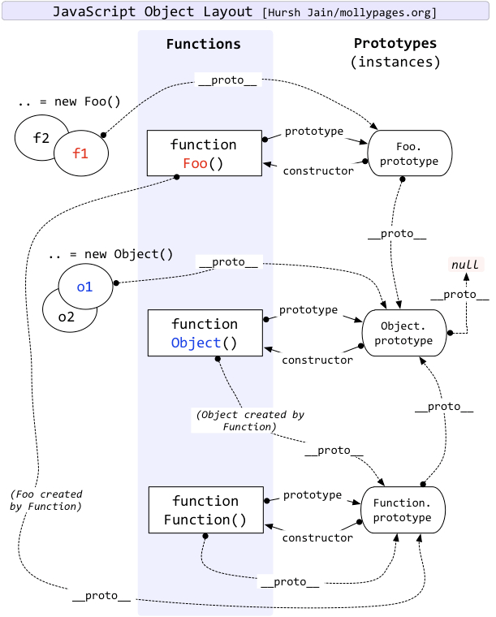

JavaScript的原型和原型链是面试的时候经常被问及到的问题，考察了我们对JavaScript的基础掌握情况，今天我们在这里用一张图来梳理下其中的知识点。
下面我来引入这张非常经典的图，我也是亲手画了下，大家也可以自己动手去画，对理解原型及原型链有很大的帮助。

这张图详细的描述了构造函数Function，Object以及它们实例之间的原型关系。
大致总结下就是如下几点：
大致总结一下就是：
Object是作为众多new出来的实例的基类 ， function Object(){ [ native code ] }。
Function是作为众多function出来的函数的基类 ，function Function(){ [ native code ] }。
构造函数的__proto__(包括Function和Object)都指向Function.prototype。
原型对象的__proto__都指向Object.prototype。
Object.prototype.__proto__指向null。
所有的对象(对象，函数)都有__proto__属性(隐式原型)，指向构造该对象的构造函数的原型。
只有函数function才具有prototype属性(显式原型)。这个属性是一个指针，指向一个对象，这个对象的用途就是包含所有实例共享的属性和方法（我们把这个对象叫做原型对象）。原型对象也有一个属性，叫做constructor，这个属性包含了一个指针，指回原构造函数。
弄清楚以上几点，再结合自己手画这张图，我相信大家都能明白原型和原型链了。